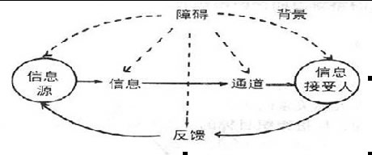
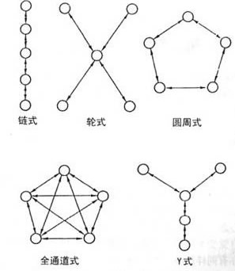
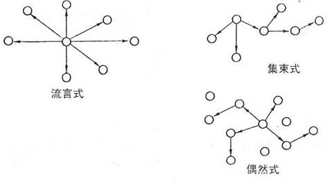
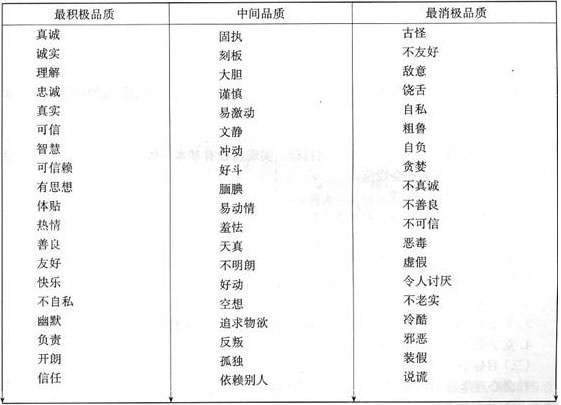

00:00
第六节 沟通与人际关系
第一单元 沟通的结构与功能
一、沟通定义
沟通指信息的传递和交流的过程，包括人际沟通和大众沟通。
二、沟通的结构
沟通过程由信息源、信息、通道、信息接受者、反馈、障碍与背景等七个要素构成。 图 2-7显示了沟通过程及其构成要素的关系。
（一）信息源
（二）信息
（三）通道
（四）信息接受者
（五）反馈
（六）障碍
（七）背景
01:47

三、沟通的功能
（一）沟通是获取信息的手段。
（二）沟通是思想交流与情感分享的工具。
（三）沟通是满足需求、维持心理平衡的重要因素。
（四）沟通是减少冲突，改善人际关系的重要途径。
（五）沟通能协调群体内行动，促进效率的提高与组织目标的实现。
四、人际沟通的分类
（一）正式沟通与非正式沟通
（二）上行沟通、下行沟通与平行沟通
（三）单向沟通与双向沟通
（四）口头沟通与书面沟通
（五）现实沟通与虚拟沟通
11:02
五、沟通网络
人际沟通往往有群体背景。群体成员间的沟通模式组合起来形成沟通网络。
（一）正式沟通网络
在正式群体中，成员之间的信息交流与传递的结构称正式沟通网络。正式沟通网络一般有5种形式。即链式、轮式、圆周式、全通道式和Y式。
|  |
沟通质量的常用指标： |
| 1.信息传递速度 |
| 2.信息传递的准确度 |
| 3.接收者接收的信息量 |
| 4.满意度 |
| |
12:28
（二）非正式沟通网络
群体中的信息交流，不仅有正式沟通，也存在着非正式沟通的各种情况。有学者通过对“小道消息”的研究，发现非正式沟通网络主要有三种典型形式：流言式、集束式和偶然式。

13:40
第二单元 体语沟通
体语即身体语言。体语是非语词性的身体符号，包括：
一、目光与面部表情
二、身体运动和触摸
（一）身体运动是最易为人发现的一种体语。
（二）触摸是人际沟通的有力方式。人在触摸和身体接触时情感体验最为深刻。日常生活中，身体接触是表达某些强烈情感的方式。
三、姿势与装饰
四、人际距离
（一）公众距离
（二）社交距离
（三）个人距离
（四）亲密距离
16:06
第三单元 人际关系的类型
一、人际关系定义
人际关系是人与人在沟通与交往中建立起来的直接的心理上的联系。其特点是：
（一）个体性
（二）直接性
（三）情感性
二、人际关系的建立与发展的阶段
一般来说，良好人际关系的建立与发展要经过4个阶段：
1.定向阶段
2.情感探索阶段
3.情感交流阶段
4.稳定交往阶段
18:11
三、自我暴露与人际关系的深度
自我暴露就是把自己私人性的方面显示给他人。奥特曼（I.Altman，1973）等发现，良好的人际关系是在自我暴露逐渐增加的过程中发展起来的。随着信任程度和接纳程度的提高，交往的双方会越来越多地暴露自己。
自我暴露的程度，由浅到深，大致可以分为4个水平。
首先是情趣爱好方面；
第二是态度；
第三是自我概念与个人的人际关系状况；
第四是隐私。
一般情况下，关系越密切，人们的自我暴露就越广泛、越深刻。但有一个特例，就是彼此没有任何关系的人，在虚拟的网络空间，可能达到完全的自我暴露。
四、良好人际关系的原则
1.相互性原则
2.交换性原则
3.自我价值保护原则
4.平等原则
24:23
五、人际关系的三维理论
心理学家舒茨（W.C.Schutz，1958）以人际需要为主线提出了人际关系的三维理论，他称自己的理论是基本人际关系取向（FIRO）理论。其要点是：
（一）人有三种基本的人际需要
（二）人际需要决定了个体与其社会情境的联系，如果不能满足可能会导致心理障碍及其他严重问题，比如精神崩溃等。
（三）对于这三种基本的人际需要，人们有主动表现和被动表现两种满足方式。这样，三种基本的人际需要再加上主动与被动的满足方式，就构成了六种基本的人际关系取向。
（四）六种人际关系取向
1.主动包容式
2.被动包容式
3.主动支配式
4.被动支配式
5.主动感情式
6.被动感情式
26:16
（五）童年期的人际需要是否得到满足以及由此形成的行为方式，对个体成年后的人际关系有决定性影响。
1.包容需要
如果儿童与双亲交往少，会出现低社会行为；如儿童对双亲过分依赖则会形成高社会行为；如果儿童与父母适宜地沟通、融合，会形成理想的社会行为，无论群居或独处都会有满足感，并能根据情境选择自己的行为方式，人际关系较好。
2.支配需要
如果双亲对儿童既有要求又给他们一定自由，使之有某种自主权，会使儿童形成民主式的行为方式；双亲如果过分控制，则易于形成专制式行为方式，如儿童倾向于控制他人，易独断独行；或者形成拒绝支配式的行为方式，表现顺从，不愿负责，拒绝支配他人；或者焦虑过重，防御倾向明显。
3.感情需要
如果儿童在小时候得不到双亲的爱，长大后会出现低个人行为；如果儿童生活在溺爱环境中，长大后会表现出高个人行为；如果儿童能获得适当的关心、爱护，就会形成理想的个人行为，长大后既不会受宠若惊，也没有爱的缺失感，能恰当地对待自己。
29:39
第四单元 人际吸引
一、人际吸引定义
人际吸引是个体与他人之间情感上相互亲密的状态，是人际关系中的一种肯定形式。按吸引的程度，人际吸引可分为：亲合、喜欢和爱情。
二、影响人际吸引的因素
（一）熟悉与邻近
（二）相似性
人们往往喜欢那些和自己相似的人。相似性主要包括：
1.信念、价值观及人格特征的相似。
2.兴趣、爱好等方面的相似。
3.社会背景、地位的相似。
4.年龄、经验的相似。
（三）互补
1.需要的互补。
2.社会角色的互补。
3.人格某些特征的互补，如内向与外向。
（四）外貌吸引力
外貌美能产生光环效应，即人们倾向于认为外貌美的人也具有其他的优秀品质，虽然实际上未必如此。
38:35
（五）才能
才能一般会增加个体的吸引力。但如果这种才能对别人构成社会比较的压力，让人感受到自己的无能和失败，那么才能不会对吸引力有帮助。研究表明，有才能的人如果犯一些“小错误”，会增加他们的吸引力。
（六）人格品质
人格品质是影响吸引力的最稳定因素，也是个体吸引力最重要的因素之一。美国学者安德森（N.Anderson，1968）研究了影响人际关系的人格品质。研究结果表明，排在序列最前面、喜爱程度最高的六个人格品质是：真诚、诚实、理解、忠诚、真实、可信，它们或多或少、直接或间接同真诚有关；排在系列最后受喜爱水平最低的几个品质如说谎、 假装、不老实等也都与真诚有关。安德森认为，真诚受人欢迎，不真诚则令人厌恶。

注：沿着箭头方向，品质受欢迎的程度逐渐递减。